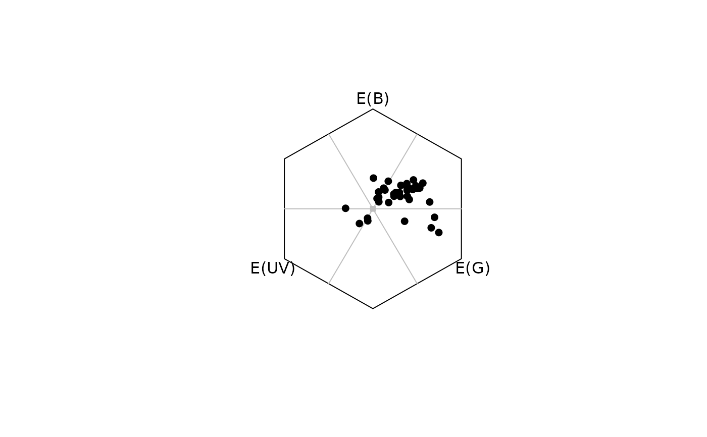
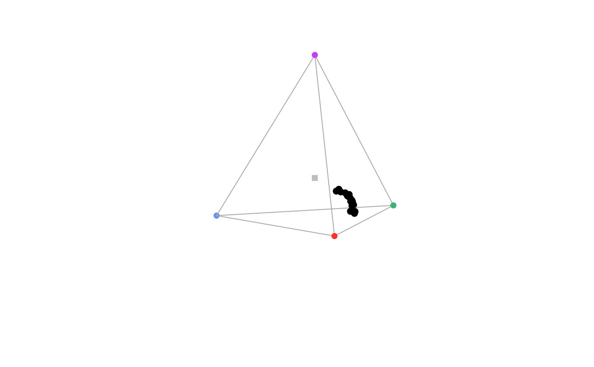

Plots reflectance spectra in the appropriate colourspace.
# S3 method for colspace plot(x, ...)
| x | (required) an object of class |
|---|---|
| ... | additional graphical options, which vary by modeled
Also see |
A colourspace plot appropriate to the input data.
Smith T, Guild J. (1932) The CIE colorimetric standards and their use. Transactions of the Optical Society, 33(3), 73-134.
Westland S, Ripamonti C, Cheung V. (2012). Computational colour science using MATLAB. John Wiley & Sons.
Chittka L. (1992). The colour hexagon: a chromaticity diagram based on photoreceptor excitations as a generalized representation of colour opponency. Journal of Comparative Physiology A, 170(5), 533-543.
Chittka L, Shmida A, Troje N, Menzel R. (1994). Ultraviolet as a component of flower reflections, and the colour perception of Hymenoptera. Vision research, 34(11), 1489-1508.
Troje N. (1993). Spectral categories in the learning behaviour of blowflies. Zeitschrift fur Naturforschung C, 48, 96-96.
Stoddard, M. C., & Prum, R. O. (2008). Evolution of avian plumage color in a tetrahedral color space: A phylogenetic analysis of new world buntings. The American Naturalist, 171(6), 755-776.
Endler, J. A., & Mielke, P. (2005). Comparing entire colour patterns as birds see them. Biological Journal Of The Linnean Society, 86(4), 405-431.
Kelber A, Vorobyev M, Osorio D. (2003). Animal colour vision - behavioural tests and physiological concepts. Biological Reviews, 78, 81 - 118.
Backhaus W. (1991). Color opponent coding in the visual system of the honeybee. Vision Research, 31, 1381-1397.
Endler, J. A. (1990) On the measurement and classification of color in studies of animal color patterns. Biological Journal of the Linnean Society, 41, 315-352.
Rafael Maia rm72@zips.uakron.edu
Thomas White thomas.white026@gmail.com
Chad Eliason cme16@zips.uakron.edu
data(flowers) data(sicalis) # Dichromat vis.flowers <- vismodel(flowers, visual = "canis") di.flowers <- colspace(vis.flowers, space = "di") plot(di.flowers)# Colour hexagon vis.flowers <- vismodel(flowers, visual = "apis", qcatch = "Ei", relative = FALSE, vonkries = TRUE, achromatic = "l", bkg = "green" ) hex.flowers <- colspace(vis.flowers, space = "hexagon") plot(hex.flowers, sectors = "coarse")# Tetrahedron (static) vis.sicalis <- vismodel(sicalis, visual = "avg.uv") tcs.sicalis <- colspace(vis.sicalis, space = "tcs") plot(tcs.sicalis)if (interactive()) { # Tetrahedron (interactive) vis.sicalis <- vismodel(sicalis, visual = "avg.uv") tcs.sicalis <- colspace(vis.sicalis, space = "tcs") tcsplot(tcs.sicalis, size = 0.005) ## Add points to interactive tetrahedron patch <- rep(c("C", "T", "B"), 7) tcs.crown <- subset(tcs.sicalis, "C") tcs.breast <- subset(tcs.sicalis, "B") tcsplot(tcs.crown, col = "blue") tcspoints(tcs.breast, col = "red") ## Plot convex hull in interactive tetrahedron tcsplot(tcs.sicalis, col = "blue", size = 0.005) tcsvol(tcs.sicalis) }